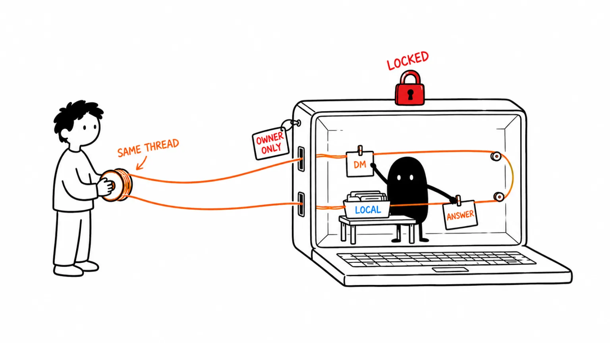
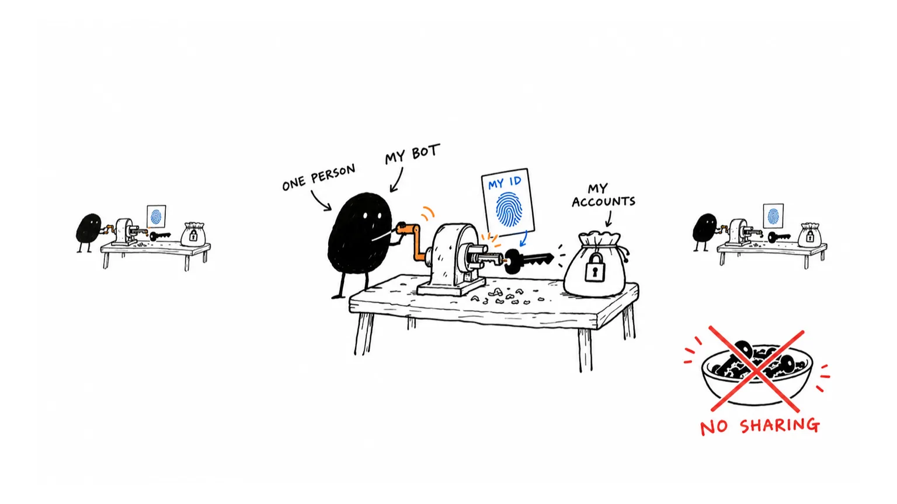
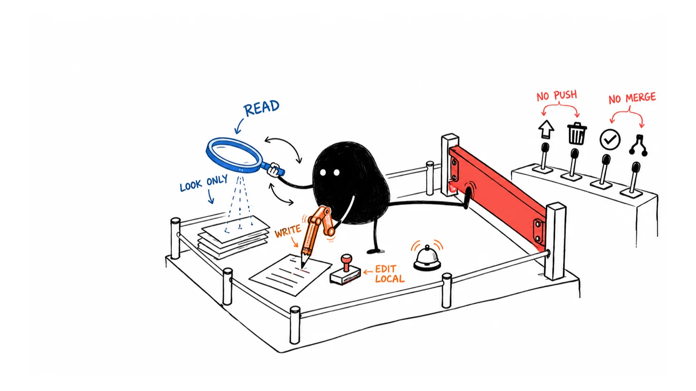
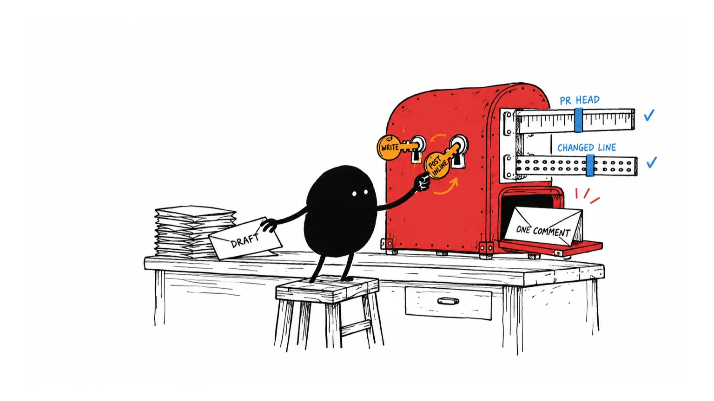

A Slack bot of your own that runs Claude Code on your Mac, in your repo, under your login.
Start setupThere's no shared bot. Everyone runs their own copy, and each copy talks to exactly one person.

Claude usage counts against your plan. When it posts to GitHub (only in write threads), it posts as whoever is logged into gh on your Mac, which is you.
Close the lid and the bot goes offline. Anything you sent in the meantime gets picked up after it reconnects.

Plan on about 15 minutes. Most of that is clicking through Slack's app settings.
The code and the Homebrew tap live in private repos. Send your GitHub username to @aldefy and ask for read access to aldefy/slack-claude and aldefy/homebrew-private.
GitHub emails you two invitations. Accept both before you install, or the tap will fail with "Repository not found".
It's macOS only, since tokens go in the Keychain and the service runs under launchd.
brew --versionclaude --versiongh auth statusssh -T git@github.compwdAlready use Sentry, Jira, Mixpanel or Slack through MCP in Claude Code? The bot reuses those logins and only exposes their read and query tools.
brew tap aldefy/private git@github.com:aldefy/homebrew-private.git brew install slack-claude
Copy the manifest to your clipboard:
slack-claude manifest
Before you paste it, change name and display_name from Claude Laptop to something with your name in it, like Claude (Priya). If nobody does this, the workspace ends up with a dozen identical bots.
Then collect two tokens:
Basic Information, then App-Level Tokens. Generate one with the connections:write scope.
OAuth & Permissions. Copy the Bot User OAuth Token.
slack-claude setup
It walks you through the rest:
claude, git and gh are on your PATH.U0123ABCD, and it's the only person the bot will answer./Users/you/code/app.Settings live in ~/.config/slack-claude/config.json: repo path, per-message budget (up to $5), timeout (up to 20 minutes), dashboard port.
Find your app under Apps in Slack and send it something real:
top 5 Sentry issues in the last 24h
review PR 1285 with android-pr-review
Send stop in a thread to cancel a run and status to check health. Every answer ends with its time, cost, tokens and model. Thumbs-up or thumbs-down reactions feed the local dashboard at 127.0.0.1:7317.
Each thread runs in one mode. A new DM asks which one you want; start the message with read: or write: to skip the question, and reply read or write later to switch.

| What it can do | Read | Write |
|---|---|---|
| Read code, search, git log, diff and blame | YES | YES |
| Query Sentry, analytics, Jira, read Slack | YES | YES |
| Edit files, git add and commit locally | NO | YES |
| Run unit tests and compile | NO | YES |
| Comment on a PR, post a review with inline comments | NO | YES |
| Push, delete, reset, run any other shell command | NO | NO |
| Approve or merge a PR | NO | NO |
| Message your other Claude sessions | NO | NO |
There's no full-access mode on purpose. An unrestricted session you can drive from Slack is a remote shell into your laptop.
When someone requests your review on GitHub, a draft shows up in your DM. Nothing reaches GitHub until you say so.

Read mode. Findings with file and line, plus a verdict.
Switches the thread so it's allowed to post.
Or ask for changes first: "drop finding 3, then post inline".
Never an approval or a change request.
Before anything goes up, it checks that the PR hasn't moved past the commit it reviewed and that every inline comment points at a changed line. If one check fails, it posts nothing and tells you which comments to fix. Large PRs get read one file at a time, so the line numbers come from the real diff.
brew update && brew upgrade slack-claude && slack-claude restart
slack-claude statusRunning, and what's in flightslack-claude logsFollow the logslack-claude restartAlso start and stopslack-claude versionWhat's installedslack-claude selftest "q"One sandboxed run, no Slackslack-claude install-menubarSwiftBar iconThe usual suspects, roughly in the order people hit them.
Either an invite isn't accepted yet or GitHub doesn't have your SSH key. ssh -T git@github.com should greet you by name. If you've only ever used HTTPS:
gh ssh-key add ~/.ssh/id_ed25519.pub
Run slack-claude status and slack-claude logs and look for slack-claude up. If it's up, the member ID from setup is probably wrong (it has to be yours), or the app-level token is missing the connections:write scope.
macOS tends to kill the first launch of a freshly upgraded binary. Kick it, and if needed kick it again:
launchctl kickstart -k gui/$(id -u)/dev.slack-claude
Turn on Interactivity & Shortcuts in your Slack app's settings. Typing read or write in the thread works either way.
The bot only reuses MCP servers you've already connected and logged into inside Claude Code. Log in there, then run slack-claude restart.
Someone pushed after the draft was written. Ask it to re-read the diff and re-check its comments, then say post inline again.
No. It drops every message and reaction that isn't from your member ID, so they'll need their own.
Never. In Slack it only replies inside your DM with your bot.
Whatever your Claude plan charges for the runs. Each message is capped at $2 by default (you can raise it to $5), runs time out after 10 minutes, and automatic runs like review drafts stop at 10 a day.
slack-claude stop, brew uninstall slack-claude, brew untap aldefy/private, delete ~/.config/slack-claude, then delete the app at api.slack.com.